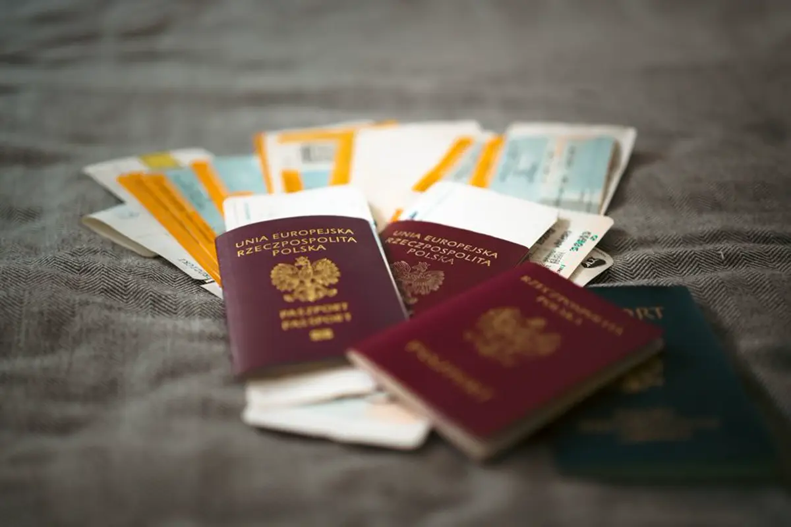

Статус на 2 ноября 2026 (проверено): регистрация DV-2027 не открыта, даты открытия нет. 29 октября 2026 Апелляционный суд США по Девятому округу (дело 26-6943) удовлетворил срочное ходатайство Госдепартамента и приостановил предварительный запрет, который обязывал ведомство объявить период регистрации DV-2027 до 29 октября и открыть его до 1 ноября 2026. Пока действует приостановка, эти сроки не применяются.
Почему суд приостановил решение: коллегия из трёх судей (McKeown, N.R. Smith, Thomas) сочла, что правительство, скорее всего, выиграет апелляцию: единственный истец, юридическая фирма Red Eagle Law, L.C., не входит в «зону интересов» закона о Diversity Visa, а сами потенциальные участники лотереи в деле не участвовали. Суд подчеркнул, что не одобряет отказ Госдепартамента открыть регистрацию, но у фирмы нет права на иск. Судья Smith добавил, что у фирмы нет и процессуальной правоспособности (standing).
Что дальше: приостановка не завершает дело. Правительство подаёт основную позицию до 17 ноября 2026, ответ Red Eagle — до 15 декабря 2026. Фирма может просить пересмотра полным составом суда. Сама программа Diversity Visa остаётся в законе США (8 U.S.C. 1153(c)); отменить её может только Конгресс. Но на практике у лотереи DV-2027 нет даты, и объявить регистрацию может только Госдепартамент.
Что мы проверили: 2 ноября 2026 официальный сайт dvprogram.state.gov по-прежнему показывает текст DV-2026: «Entries are not being accepted at this time». В разделе новостей travel.state.gov объявления о DV-2027 нет (последняя новость от 2 октября 2026), в Federal Register уведомления нет. Наша статья от 16 октября описывала решение окружного суда; эта статья заменяет её сроки.
Осторожно, мошенники: любой, кто сегодня предлагает «зарегистрировать вас на DV-2027», обманывает. Анкеты принимаются только на dvprogram.state.gov в официально объявленный период, и Госдепартамент советует заполнять форму самостоятельно, без агентов. Не платите за лотерею, которая не открыта.
Заявителям из Узбекистана: для многих семей лотерея была главной надеждой, и это тяжёлая новость. Не ждите одного судебного дела: учебные визы, рабочие маршруты и семейное спонсорство в США, Канаде и Великобритании открыты сейчас. Сарвар Рахманов, консультант RISK L.L.C. (не адвокат), отвечает на вопросы в WhatsApp: +998 99 616 31 66. Мы обновим эту страницу, когда Госдепартамент или суд опубликуют что-то новое.
Официальные источники
- US Court of Appeals for the Ninth Circuit, Red Eagle Law, L.C. v. Rubio, No. 26-6943, published order granting stay pending appeal (October 29, 2026)
- Ninth Circuit docket 26-6943 (briefing schedule, stay order)
- S.D. Cal. amended order granting preliminary injunction, Dkt. 31 (October 21, 2026)
- Official DV entry site (E-DV), status checked November 2, 2026
- travel.state.gov visa newsroom (no DV-2027 announcement as of November 2, 2026)
- Our earlier article: DV-2027 court order of October 14, 2026
Проверено по официальным источникам на дату публикации. Это общая информация, а не юридическая консультация; правила могут меняться.
Хотите понять, как это касается вас?
Бесплатная первая консультация в WhatsApp или Telegram.